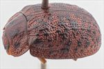
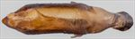
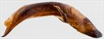
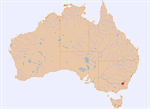

Click on images to enlarge
![Male, Happy Jack, Snowy Mts., S.E. New South Wales [GM-095] (QM)](assets/image/Ta230/Ta230_AQM-095_SM.jpg){kind=link}

Male, Happy Jack, Snowy Mts., S.E. New South Wales [GM-095] (QM)
![Aedeagus, dorsal view [QM-095, Happy Jack, S.E. New South Wales]](assets/image/Ta230/Ta230_AdGM-095a_SM.jpg){kind=link}

Aedeagus, dorsal view [QM-095, Happy Jack, S.E. New South Wales]
![Aedeagus, lateral view [QM-095, Happy Jack, S.E. New South Wales]](assets/image/Ta230/Ta230_AdGM-095b_SM.jpg){kind=link}

Aedeagus, lateral view [QM-095, Happy Jack, S.E. New South Wales]
{kind=link}

Distribution
Name
Trachymela sp. Ta230
Reference specimen
GM-095 [QM], Happy Jack, Australian Alps, S.E. N.S.W.
Adult Description
Length: ♀ ? mm, ♂ 9.85 mm (1).
[description based on the single (male) specimen available]
Colour: head mid-brown, with clypeus black, along with a thin black line running along centre of frons from clypeus to rear of head, eyes black-rimmed, mandibles mid-brown with black tipes; labrum yellow-brown; antennomeres 1-4 light brown, 5-7 darker brown, 8-11 black; pronotum: brown, same shade as head, with a slighly irregular elliptical black patch on either side of centre and a smaller circular black patch behind each eye, centre of pronotum with a short, slighly elevated, dark-brown ridge; scutellum: brown, same shade as pronotum, broadly edged in black; elytra: brown, same shade as pronotum, with prominent black raised, shiny, smooth pustules studding the whole surface, a transversely aligned slighly higher concentration of these is situated behind transverse depression, punctures are similar in colour as interstices, humeral callus black; venter: head and thoracic ventrites dark brown tending to black in places, abdominal ventrites mid-brown, legs pale-brown, inside surface of elytral epipleura black. Cuticular wax: unknown.
Shape: rather flattened (H/L ♂=0.38, ♀=?), greatest height viewed laterally a little in front of middle of elytral margin; Head; surface uneven, somewhat rugulose, punctures unevenly sized (pd~1.5-3xef), somewhat unevenly distibuted, a small more lightly punctured area present at centre rear. Antennae moderate-sized (AL ♂=42.6%BL, ♀=?%BL), filiform. Pronotum; almost evenly curved transversely across disc, with margins noticeably explanate, foveal depression relatively well-defined, with central elevation almost obsolete, surface of disc rather rugulose, with a thin elevated ridge along centre line and an obliquely positioned, roughly elliptical elevated area on each side positioned with its posterior extreme closer to the centre of disc, puncturation clearly impressed with mostly relatively large punctures (pd~2-3xef) intermixed with smaller, becoming noticeably coarser from foveal depression to lateral margins. Front margins join lateral margins in a smoothly rounded right-angle, with lateral margin curving smoothly towards centre of lateral margin, then lateral margins almost parallel from there to join with posterior margin. Scutellum; almost smooth and unpunctured. Elytra; surface evenly curved transversely, depressed (lightly curved longitudinally from behind scutellum to almost ¾ of distance to apex, then more strongly curved, a distinct but shallow depression extends across surface just in front of middle, punctures large and distinct throughout, relatively evenly distributed between the prominent verrucae, the longitudinal series of verrucae clearly apparent, with VR1-VR10 all having verrucae, individual verrucae small to moderate in size, often extended into an oval shape, only rarely more than 2X longer than wide, sometimes merging together laterally (particularly in VR4 and VR5) to form an irregular elevated surface a little behind transverse depression, surface discontinuous under humeral callus. Vertical extension of epipleura small (HCE/PW=0.28). Venter; Prosternal process converging very slightly anteriorly, lightly closed anteriorly, setae sparsely distributed over prosternal process and mesosternum, a small cluster of long setae on anterior, median and posterior trochanters; front edge of metasternum beveled, truncate; inner edge of posterior of epipleurae lacking setae. Aedeagus; moderately long (LPE=28.8%BL), in dorsal view, almost parallel-sided from basal sulcus to about middle of ostial opening from where the sides converge almost uniformly to apex, forming a long narrow triangle that terminates in the small tip, dorsal surface lightly sclerotized with dorso-median channel relatively poorly defined and short, dorsolateral channels present adjacent to ostium; tip barely protruding, ostium moderately long, the dorsal flaps quite short, extending only halfway along the triangular section, with their inner edges forming a roughly equilateral triangle with apex at rear of ostium; in lateral view, ventral edge almost evenly and moderately curved throughout, dorsal edge noticeably flat in middle, thinning towards apex over 25% of length, tip deflexed and relatively small, flagellum almost invariably broken off.
Larvae
unknown.
Eggs
unknown.
Similar species
Ta22 – this species is superficially similar but is darker, somewhat smaller and differs by its possession of an almost completely black ventral surface (including legs) and its trochanters all having only a single long seta. Its elytral verrucae tend to be larger than those of Ta230, and it always has a prominent verruca in VR10 situated midway between the humeral callus and elytral margin.
Notes
The specimens of Ta230 that I have seen are all from the same location in a high-altitude region of the Snowy Mountains in S.E. New South Wales. No data is available on host preferences.
Copyright © 2026. All rights reserved.